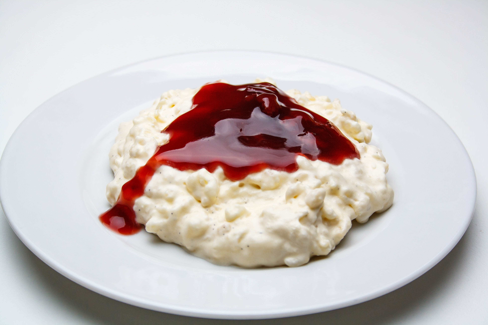

Recipe: Rice Pudding

Rice Pudding with Cherrys. Picture by @rasmusgs at
unsplash
Ingredients
- 1 cup of rice pudding rice
- 4-6 cups of milk
- sugar
- Flavor e.g.: cherrys, nutmeg, vanilla or raisins
Steps
- Put rice and milk in pot
- Add sugar and a little salt
- Never stop stirring until milk has turned into pudding
- add rest of flavouring